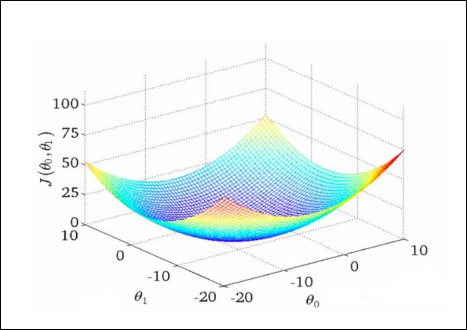
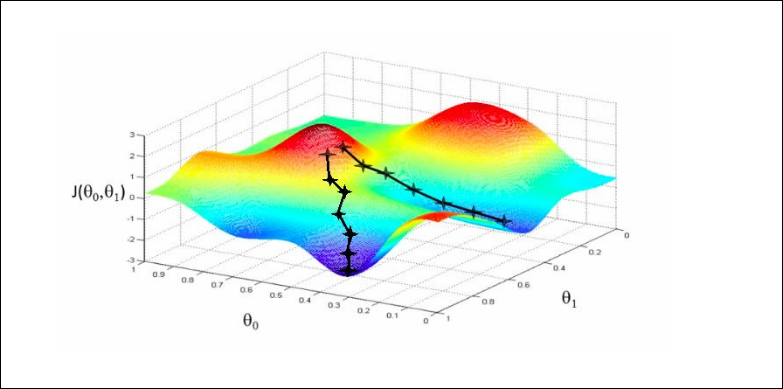
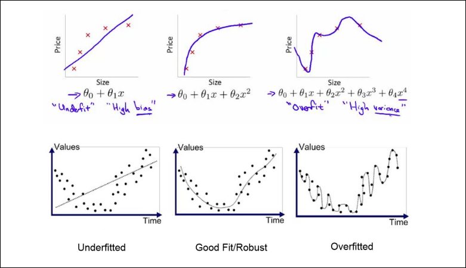
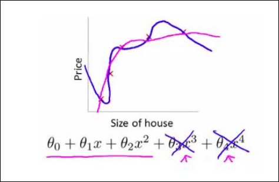

IA · curso 3
5. Aprendizaje Automático (Machine Learning) · IA
5.1 Introducción y Cambio de Paradigma
Hasta ahora (Sistemas Expertos), programábamos la IA diciéndole explícitamente qué hacer (reglas SI-ENTONCES). En el Aprendizaje Automático, cambiamos el enfoque: la máquina aprende las reglas a partir de los datos.
Un programa aprende si mejora su rendimiento (P) en una tarea (T) basándose en la experiencia (E).
- Ejemplo (Damas):
- T (Tarea): Jugar a las damas.
- E (Experiencia): Jugar miles de partidas contra sí mismo.
- P (Rendimiento): % de partidas ganadas.
5.2 Tipos de Aprendizaje
No todos los problemas son iguales. Según la información que tengamos, clasificamos el aprendizaje en:
5.2.1 Aprendizaje Supervisado
Tenemos los "exámenes resueltos". Entregamos a la máquina datos de entrada (
Se divide en dos subtipos clave:
-
Regresión: Predice un valor numérico continuo (infinitas posibilidades).
- Ejemplo: Predecir el precio de una casa según sus metros cuadrados.
-
Clasificación: Predice una clase o etiqueta discreta (categorías fijas).
- Ejemplo: ¿Es este tumor maligno o benigno? (0 o 1).
- Nota: Esto es lo que hacía el Perceptrón (clasificar).
5.2.2 Aprendizaje No Supervisado
Solo tenemos los datos (
- Ejemplo (Clustering): Agrupar noticias similares en Google News o segmentar clientes por comportamiento .
5.3 Regresión Lineal: El Modelo Base
Es el "Hola Mundo" del Machine Learning. Busca dibujar la línea recta que mejor se ajusta a una nube de puntos.
5.3.1 La Hipótesis (
Es la fórmula matemática que usamos para predecir. En regresión lineal simple (una variable), es la ecuación de una recta:
: El punto de corte (Bias). : La pendiente (Peso).
Conexión Clave: ¿Te suena? Es idéntico a la parte interna de una neurona (
- Por esto, en el examen, un Regresor Lineal es lo mismo que una Neurona Artificial con función de activación Lineal (Identidad).
- Si a esa suma no le pones función de activación (o la función es
), la neurona se comporta exactamente como este modelo de regresión.
5.3.2 La Función de Coste (
Para aprender, necesitamos medir cuánto nos equivocamos. Usamos el Error Cuadrático Medio (MSE):
-
Básicamente: "Calcula la diferencia entre lo que predijiste y el valor real, elévalo al cuadrado (para que sea siempre positivo) y haz la media".
-
Objetivo: Encontrar los
(pesos) que hagan que esta sea mínima (cero error idealmente). -
La función de coste de un regresor lineal mide lo bien o mal que opera el regresor lineal en un conjunto de datos. Es una función convexa.
-
Esto es una función de coste convexa.
5.3.3 Generalización: Regresión Lineal Multivariable
El modelo básico (
- Concepto: si tenemos
características ( ), la fórmula se espande - Nueva Hipótesis:
- Vectorización: Para que el ordenador lo calcule rápido, esto se expresa como una multiplicación de matrices:
.
5.3.4 Adaptación a Curvas: Regresión Polinómica
A veces, los datos no siguen una línea recta, sino una curva.
-
El Truco: no necesitamos inventar un algoritmo nuevo. Podemos "engañar" a al regresión lineal creando nuevas características artificiales elevando las originales al cuadrado, al cubo, etc.
-
Hipótesis:
-
Peligro: Al añadir términos polinómicos (
), la línea se vuelve muy flexible y curva. Esto mejora el ajuste, pero si nos pasamos, causaremos Overfitting (esto se explica más adelante).
Imagina que quieres predecir cuánto vas a gastar en electricidad (
-
Intento con Regresión Lineal (Línea Recta):
- La máquina pensaría: "Cuanto más calor hace, más gastas" (Línea subiendo) O BIEN "Cuanto más calor hace, menos gastas" (Línea bajando).
- ¿Por qué falla? Porque la realidad es más compleja:
- Si hace mucho frío (0ºC), gastas mucho (calefacción).
- Si hace una temperatura media (20ºC), gastas poco (ni frío ni calor).
- Si hace mucho calor (40ºC), vuelves a gastar mucho (aire acondicionado).
- Forma de los datos: Tienen forma de "U" (una parábola).
-
Solución (Regresión Polinómica):
- Al añadir el término al cuadrado (
), la fórmula puede curvarse y crear esa "U". - Conclusión: El modelo aprende que el gasto sube en ambos extremos de la temperatura.
- Al añadir el término al cuadrado (
Nota
En un regresor polinomial, cuanto mayor es el grado del polinomio, mejor podemos ajustar el modelo a su conjunto de entrenamiento. No implica que vaya a funcionar mejor el modelo, seguramente haya alto overfitting.
5.4 Regresión Logística (Para Clasificación)
5.4.1 La hipótesis
(Importante: Aunque se llame "regresión", sirve para clasificar). Es el modelo matemático que conecta la Regresión Lineal con las Neuronas Artificiales.
-
El Problema: La regresión lineal predice valores continuos (puede dar 500, -20, 1000). Pero si queremos clasificar (0 o 1, Tumor benigno o maligno), necesitamos que la salida esté acotada entre 0 y 1.
-
La Solución (Función Sigmoide): Envolvemos la hipótesis lineal dentro de una función logística o sigmoide (
). -
Interpretación: La salida se convierte en una probabilidad.
- Si
, significa "Hay un 70% de probabilidad de que sea clase 1".
- Si
-
Frontera de Decisión: Es la línea (o curva) que separa la zona donde predecimos 0 de la zona donde predecimos 1. Se produce cuando la probabilidad es exactamente 0.5.
5.4.2 Función de Coste
Se define en dos partes:
-
Si la respuesta real es 1 (
): - Interpretación: Si la máquina predice 1 (acierta), el coste es 0. Si predice 0 (falla estrepitosamente), el coste tiende a infinito (castigo enorme).
-
Si la respuesta real es 0 (
):
- Interpretación: Si predice 0 (acierta), coste 0. Si predice 1 (falla), coste infinito.
Para no escribir dos fórmulas, las combinamos en una sola ecuación elegante:
- Nota: Solo uno de los dos términos se activa a la vez (porque
es 0 o 1, anulando la otra parte).
5.4.3 Clasificación Binaria vs. Multiclase
La Regresión Logística está diseñada por naturaleza para responder "Sí/No" (Binaria). ¿Pero qué pasa si quiero clasificar correos en "Trabajo", "Amigos" y "Spam" (3 clases)?
A. Clasificación Binaria (2 Clases)
- Datos:
. - Frontera de Decisión: Una sola línea (o curva) que separa el espacio en dos zonas.
- Modelo: Una sola hipótesis
.
B. Clasificación Multiclase (Más de 2 grupos)
- Datos:
. - Estrategia: Usamos la técnica "Uno contra Todos" (One-vs-All).
En lugar de entrenar un solo clasificador complejo, entrenamos varios clasificadores binarios:
-
Transformamos el problema:
- Imagina que tienes 3 clases: Triángulos, Cuadrados y Círculos.
- Entrenas el Clasificador 1: ¿Es un Triángulo o NO? (Juntas cuadrados y círculos en el grupo "NO").
- Entrenas el Clasificador 2: ¿Es un Cuadrado o NO?
- Entrenas el Clasificador 3: ¿Es un Círculo o NO?
-
Predicción:
- Cuando llega un dato nuevo, lo pasas por los 3 clasificadores.
- Cada uno te dará una probabilidad (ej. C1: 20%, C2: 80%, C3: 10%).
- Eliges la clase con la probabilidad más alta (
).
5.4.4 Ejemplo
Quieres que la IA decida si un email entrante es "Spam" o "Correo Normal".
-
Intento con Regresión Lineal:
- Le das al sistema el número de veces que aparece la palabra "Oferta".
- La regresión lineal te podría devolver un valor como
o . - ¿Por qué falla? ¿Qué significa que un correo sea "150 de Spam"? No tiene sentido. Tú necesitas una probabilidad entre 0 y 1.
-
Solución (Regresión Logística):
- La función Sigmoide "aplasta" cualquier número que salga para que esté siempre entre 0 y 1.
- Resultado: Te dice "La probabilidad de que esto sea Spam es 0.95".
- Decisión: Como 0.95 > 0.5 (umbral), lo manda a la carpeta de Spam.
5.5 El Motor de Aprendizaje: Descenso del Gradiente
¿Cómo encuentra la máquina los mejores
Algoritmo: Repetir hasta converger:
-
Derivada (
): Nos dice la pendiente. Si es positiva, debemos bajar (restar); si es negativa, subir. Nos da la dirección correcta. -
Tasa de Aprendizaje (
): Es el tamaño del paso. - Si
es muy pequeño: El aprendizaje es lentísimo (pasitos de bebé). - Si
es muy grande: Podemos "saltarnos" el mínimo y nunca converger (pasos de gigante).
- Si
-
Conexión: Este es el mismo principio matemático que usaba el Perceptrón para actualizar sus pesos (
).
Nota
Normalizar los datos favorece a la convergencia del método, permitiendo que la forma de la función sea más uniforme.
En modelos simples, como el perceptrón, el regresor lineal (tambíen polinómico y multivariable) y el regresor logístico la función de coste es convexa y converge, como en la imagen.
Nota
Tras revisar el examen del 2021 el profesor considera que la función de coste no tiene por qué ser ni convexa ni cóncava, el motivo ni puta idea supongo que usará un error distinto al MSE. Es bastante loco. Vale tras hacer el examen nos confirmó que cuando hace la pregunta de si es convexa no se refiere a un tipo de función de coste concreta, así que no la marqueis.

En el descenso por gradiente en modelos no lineales, como las redes neuronales, no asegura alcanzar el mínimo global ya que puede quedares en un mínimo local. Por lo tanto la inicialización de los parámetros (los pesos) es importante ya que determina el punto inicial del descenso por gradiente. Tal y como se ve en esta imagen.

Ecuación Normal (Alternativa al descenso gradiente)
Es una forma alternativa de encontrar el valor óptimo de
- Descenso del Gradiente (Iterativo): Empiezas con valores aleatorios y vas ajustando poco a poco (iteraciones) hasta minimizar el error. Necesitas elegir un "learning rate" (
). - Ecuación Normal (Analítica): Usas álgebra lineal para resolver el problema de golpe. Es como tener una fórmula mágica que te "teletransporta" directamente al punto más bajo de la función de coste, sin dar pasos. Encuentra la solución exacta matemáticamente.
Aunque parece intimidante, la lógica es similar a resolver una ecuación simple como
- Queremos encontrar
tal que - No podemos simplemente "dividir" por la matriz
. - La operación
es, en términos muy simplificados, la forma matricial de "pasar la al otro lado dividiendo" para despejar la .
| Característica | Descenso del Gradiente | Ecuación Normal (La de tu imagen) |
|---|---|---|
| Learning Rate ( |
Necesitas elegir uno y ajustarlo. | No necesitas elegir nada. |
| Iteraciones | Muchas iteraciones. | Ninguna. Es un solo cálculo directo. |
| Complejidad | Funciona bien incluso con millones de características ( |
Se vuelve muy lenta si tienes muchas características (p.ej., |
| Resultado | Aproximado (muy cercano al óptimo). | Exacto (el óptimo matemático). Aunque a veces puede no funcionar porque no toda matriz es invertible. |
5.6 Problemas Fundamentales: Sesgo vs. Varianza
Cuando entrenamos un modelo, podemos fallar por dos extremos opuestos:
5.6.1 Underfitting (Subajuste / Alto Sesgo)
Ocurre cuando el modelo es demasiado simple e ignora la información de los datos porque "ya cree saber la respuesta"
- Ejemplo: Intentar ajustar una línea recta a datos que forman una curva parabólica.
- Síntoma: Tiene mucho error tanto en el entrenamiento como en la prueba. No aprende bien.
5.6.2 Overfitting (Sobreajuste / Alta Varianza)
Ocurre cuando el modelo es demasiado complejo y sensible. Presta tanta atención a los detalles y al ruido de los datos de entrenamiento que, si le cambias un poco los datos, cambia totalmente su predicción. No aprende, memoriza.
- Ejemplo: Un polinomio de grado 10 que pasa por todos los puntos haciendo zig-zag.
- Síntoma: Error bajísimo en entrenamiento, pero altísimo en datos nuevos (falla al generalizar).
La primera línea representa la regresión lineal y la segunda la logística.

5.7 Solución: Regularización
¿Cómo evitamos el Overfitting si queremos usar modelos complejos (muchas variables)?
La Regularización consiste en "castigar" al modelo si usa pesos (
Imagina una función matemática (un polinomio) que hace muchas curvas locas para pasar por todos los puntos (Overfitting). Para que una curva suba y baje bruscamente en distancias cortas, necesita multiplicar las variables por números muy grandes (pesos
- Si obligamos a que esos números (
) sean pequeños, la curva se vuelve más suave, plana y sencilla, evitando esos zig-zags extremos.
La función de coste
Imagina que eres un profesor evaluando a un alumno (el modelo):
- Error Original: Es la nota del examen. Quieres que falle lo menos posible.
- Término de Regularización (
): Es una multa por usar "chuletas" o respuestas demasiado complicadas.
El papel de Lambda (
-
Si
es muy ALTO (Multa enorme): El modelo dice: "¡Oye, usar pesos grandes me sale carísimo en la fórmula! Mejor pongo casi todos los pesos ( ) cercanos a cero para que el coste total sea bajo". - Consecuencia: El modelo se vuelve una línea casi plana. Es demasiado simple (riesgo de Underfitting).
-
Si
es 0 (Sin multa):
El modelo dice: "Solo me importa acertar los puntos, no me importa si uso ecuaciones complicadísimas".- Consecuencia: El modelo hace zig-zags locos para tocar todos los puntos. Es demasiado complejo (riesgo de Overfitting).
La regularización busca el equilibrio perfecto (un
